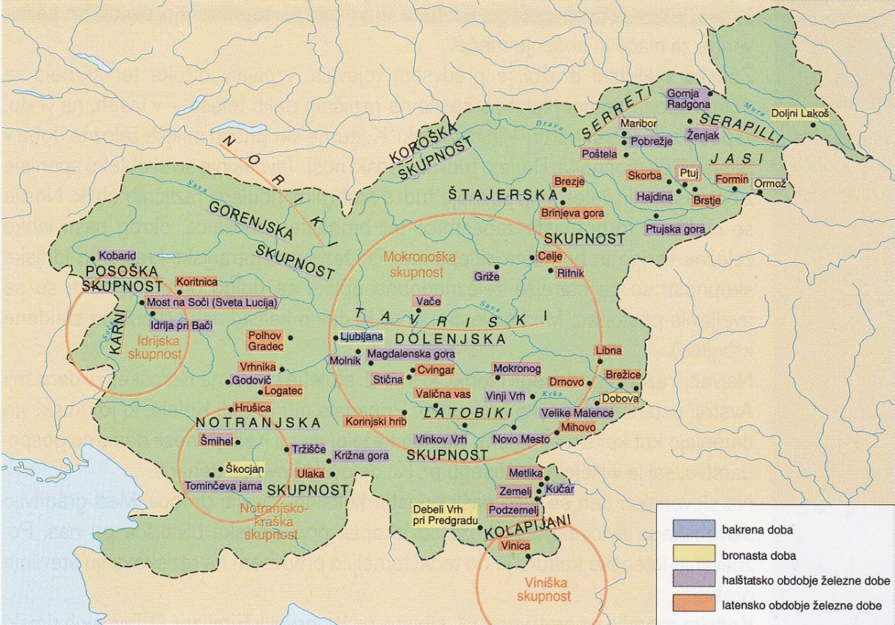
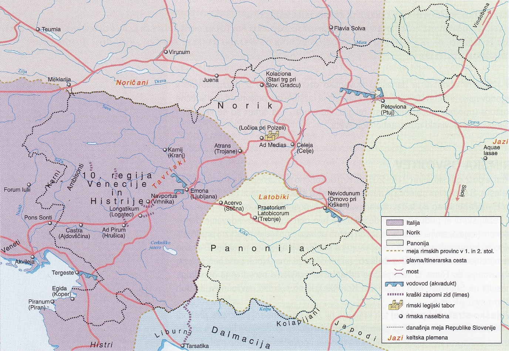
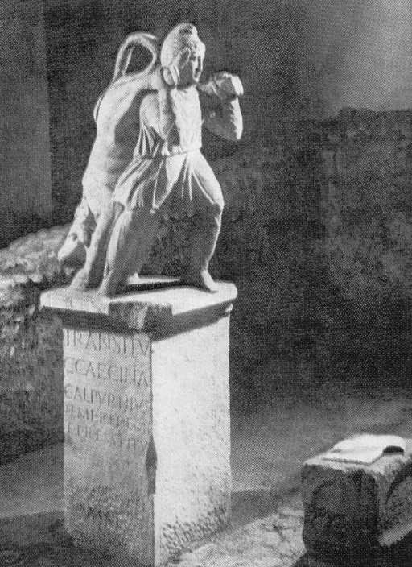
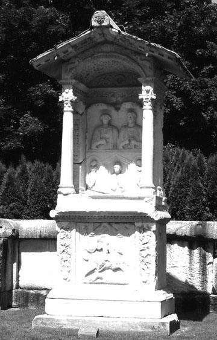
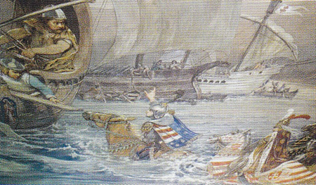
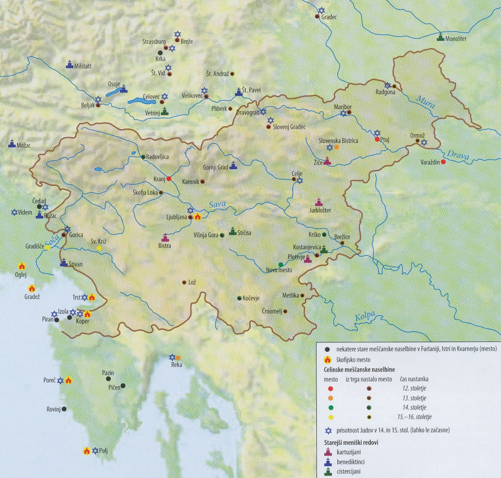
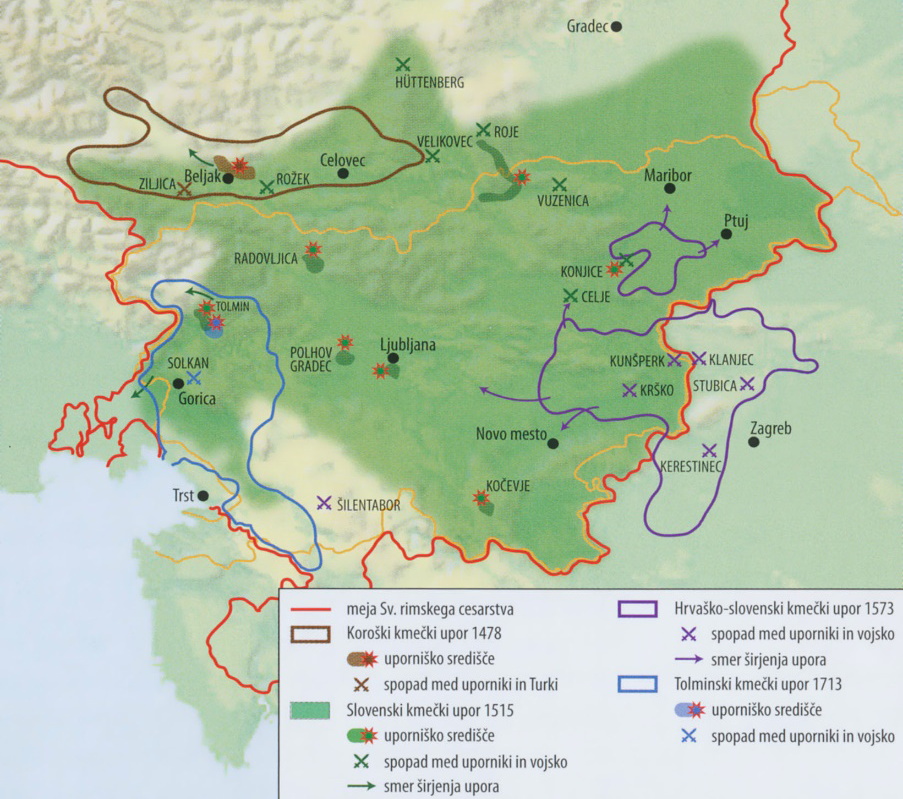

Antična kulturna dediščina na tleh današnje Slovenije
1
Nosilci latenske kulture na Slovenskem so bili Kelti.
Pri reševanju si pomagajte s sliko 4 v barvni
prilogi.
2 točki

1.1
Navedite ime keltske države, ki se je izoblikovala v
vzhodnoalpskem prostoru.
Rešitev
(kraljestvo) Norik / Noriško kraljestvo
1.2
Pojasnite, zakaj so imeli Rimljani že prej stike s
to državo.
Rešitev (ena od)
- Noriki so imeli bogata nahajališča železove rude.
- Noriki so imeli razvito oblikovanje železnih izdelkov.
- Noriki so z Rimljani trgovali z železom.
2
Že Grki in kasneje Rimljani so prihajali v stik z
današnjim slovenskim ozemljem. Obkrožite črke pred tremi
pravilnimi trditvami.
3 točke
A – Grki so slovensko ozemlje poselili med
veliko grško kolonizacijo.
B – Jazon in argonavti so na poti od Črnega do
Jadranskega morja pluli po reki Dravi.
C – Rimska osvajanja slovenskega ozemlja so se
začela z istrsko vojno (178–177 pr. Kr.).
D – Keltska plemena so začela intenzivno
trgovati z Rimljani.
E – Rimljani so, zaradi gospodarskih interesov,
leta 181 ustanovili kolonijo Akvilejo.
F – Čez slovensko ozemlje so v rimsko državo
tovorili jantar.
Za 3 pravilne 3 t. · za 2 → 2 t. · za 1 → 1 t.
3
Ustanavljanje rimskih mest in določanje statusa teh
mest na današnjem slovenskem ozemlju sta bili v
pristojnosti osrednje oblasti v Rimu.
2 točki
3.1
Pojasnite, zakaj so Rimljani ustanavljali mesta na
današnjem slovenskem ozemlju.
Rešitev (ena od)
- Rimljani so mesta na Slovenskem ustanavljali, da bi laže vojaško nadzirali ozemlje.
- Rimljani so mesta na Slovenskem ustanavljali, da bi laže gospodarsko nadzirali ozemlje.
- Rimljani so mesta na Slovenskem ustanavljali, da bi laže razvili rimsko upravo.
3.2
Navedite oba statusa, ki so ju lahko imela
ustanovljena rimska mesta.
Rešitev (oba)
kolonija in municipij
4
Poetovio in Emona sta bili najpomembnejši rimski mesti
na današnjem slovenskem ozemlju. Pri reševanju si
pomagajte z besediloma in s sliko 5 v barvni prilogi.
Obkrožite črko pred izbrano naselbino (A ali B) in
odgovorite na podvprašanja.
4 točke

Poetovio (Ptuj): Antično mesto se v
tistem času razprostira vse od Zg. Hajdine do Rogoznice
in je imelo 30.000 prebivalcev, ko je Poetovia dosegla
svoj največji obseg. V tem obdobju je v spomin na
občinskega svetovalca, sodnika in župana Marka Valerija
postavljen Orfejev spomenik. /…/ V 3. stol. na področju
Zg. Brega postavijo III. mitrej, ki ga posvetijo vojaški
legiji XIII. Gemine in V. Makedonske. Na Grajskem griču
postavijo celo Jupitrovo svetišče.
Vir: https://discoverptuj.eu/zgodovina-ptuja/.
Pridobljeno: 27. 10. 2021.
Emona (Ljubljana): Obstoj legijskega
tabora v Emoni bi hkrati izključeval možnost, da bi bila
Emona kot kolonija ustanovljena pred Tiberijem. /…/ da
je kolonijo v Emoni ustanovil Tiberij. Ta temelji v
veliki meri na gradbenem napisu Avgusta in Tiberija iz
časa tik po Avgustovi smrti, na katerem je omenjeno, da
sta vladarja mestu omogočila neko večjo konstrukcijo, po
vsej verjetnosti obzidje s stolpi.
Vir: Šašel Kos, M., 1998: Je bila Emona nekdanji
tabor 15. legije in veteranska kolonija?, str.
317–318. Zgodovinski časopis, št. 52.
Ljubljana
| Kriterij | A – Poetovio | B – Emona |
|---|---|---|
| 4.1 Rimski cesar, ki je podelil status mesta | Trajan | Tiberij |
| 4.2 Rimska upravna enota | Panonija | Venetia et Histria / 10. regija Venecije in Histrije / Regio X |
| 4.3 Arheološke najdbe (tri od) |
|
|
| 4.4 Zakaj se je prebivalstvo romaniziralo (ena od) |
|
|
5
Na ozemlju današnje Slovenije lahko najdemo številne
rimske materialne ostanke. Pod slikama 1 in 2 napišite,
katera spomenika sta predstavljena na slikah in v
katerih krajih ju najdemo.
2 točki


| Slika | Vir | Odgovor |
|---|---|---|
| Slika 1: Rimski spomenik | Vir: Brodnik, V., in drugi, 2001: Zgodovina 1, str. 202. DZS. Ljubljana | Mitrej · Ptuj |
| Slika 2: Rimski spomenik | Vir: https://www.zkst-zalec.si/sl-si/imenik/7. Pridobljeno: 10. 10. 2021. | (Spektacijeva) grobnica / nekropola · Šempeter (pri Celju) / Šempeter v Savinjski dolini |
Za vsako pravilno navedbo (spomenik + kraj) 1 točka.
6
Rimljani so na naših tleh pospeševali razvoj različnih
gospodarskih panog in gradnjo cestnega omrežja. Povežite
pojme rimskega gospodarstva z njihovim opisom.
3 točke
| Pojem | Opis | Odgovor |
|---|---|---|
| vila rustika | središče podeželskega posestva | D |
| amfora | lončena posoda za razsuti in tekoči tovor | C |
| lapidarij | zbirka kamnitih spomenikov | A |
| miljnik | kamniti steber, ki označuje razdaljo med mesti | B |
| terra sigillata | pečatna keramika | F |
| via publica | glavna rimska pot | E |
Za 6 pravilnih 3 t. · za 5–4 → 2 t. · za 3–2 → 1 t.
7
Rimljani so v 3. in 4. stoletju na slovenskih tleh
zgradili obrambni zaporni sistem. Pri reševanju si
pomagajte z besedilom in s sliko 5 v barvni
prilogi.
3 točke
Pri zapornem sistemu gre nedvomno za sistem linearnih
zapor, in sicer za kombinacijo daljših ali krajših
zidanih obrambnih struktur ter izrabo naravnih danosti
razgibanega gorskega terena. /…/ V antičnem
zgodovinopisju se to območje, ki je razmejevalo Italijo
in Ilirik, pogosto omenja prav zato, ker je idealno
zapiralo oziroma oteževalo vstop v severovzhodno
Italijo.
Vir: Kos, A., 2014: Ad Pirum (Hrušica), str. 15.
Zavod za varstvo kulturne dediščine Slovenije.
Ljubljana
7.1
Kako se je imenoval obrambni zaporni sistem?
Rešitev
Claustra Alpium Iuliarum
7.2
Navedite, kakšna je bila vloga Ad Piruma v obrambnem
sistemu.
Rešitev (ena od)
- Bil je kastel.
- Bil je obrambno-trdnjavsko središče.
- Bil je utrdba / trdnjava.
7.3
Pojasnite, zakaj so Rimljani zgradili obrambni
sistem.
Rešitev (ena od)
- Rimljani so obrambni sistem zgradili za vojaški nadzor kopenskih poti.
- Rimljani so obrambni sistem zgradili za vojaški nadzor nad občutljivimi območji.
- Rimljani so obrambni sistem zgradili za varovanje ozemlja pred vpadi tujih ljudstev.
8
Konec 3. stoletja je bila pomembna krščanska skupnost v
Poetoviu, kjer je deloval Viktorin Ptujski.
2 točki
Tisti del ljudstva, ki spoštuje božjo postavo, ljubi
bogovdanost, odpušča svojim preganjalcem, moli za svoje
sovražnike, se izkaže velikodušnega vdovi in siroti,
velikodušnega popotniku, prijaznega tujcu, /…/ pomaga
tistim, ki so v nevarnosti, obiskuje bolne, lačne
nasičuje s kruhom, žejne krepi s pijačo, potrte tolaži,
padle dviga, preplašene opogumlja, krute miri, /…/
pogumno prenaša bolečine, potrpežljivo prestaja lakoto,
žejo in mraz …
Vir: Brodnik, V., in drugi, 2010: Zgodovina 1, str.
164. DZS. Ljubljana
8.1
Navedite, katere vrline je Viktorin Ptujski
pripisoval prvim kristjanom.
Rešitev (tri od)
- velikodušnost
- spoštljivost
- odpuščanje
- pomoč v stiski
- tolažljivost
- pogum
- prijaznost
8.2
Pojasnite pomen delovanja Viktorina Ptujskega pri
razvoju krščanstva na današnjem slovenskem ozemlju.
Rešitev (ena od)
- Bil je prvi razlagalec Svetega pisma v slovenskem prostoru.
- Deloval je v krščanski skupnosti v Poetoviu.
- Bil je cerkveni pisec / škof.
- Bil je razlagalec Svetega pisma.
- Bil je prvi literarni ustvarjalec na slovenskem ozemlju.
9
Naši kraji so bili prizorišče ene najpomembnejših bitk
pozne rimske dobe, bitke pri Frigidu.
3 točke
Napad se je pričel z znamenjem križa malo pred nastopom
orkanskega vetra, ki je krščansko vojsko potiskal proti
sovražniku, tega pa izjemno oviral pri bojevanju.
Izstrelki nasprotnikove vojske so izgubili vso moč in
naj bi jih orkanski veter obračal; veter je trgal ščite
vojakom iz rok, prah jim je silil v oči in jim oviral
vid.
Vir:
http://izvirna-vipavska.si/sl/bitka-pri-frigidu.
Pridobljeno: 9. 10. 2021.
9.1
Kateri rimski cesar se je v bitki spopadel s
poganskim nasprotnikom Evgenijem?
Rešitev
Teodozij
9.2
Navedite, kako so takratne vremenske razmere
vplivale na izid bojevanja.
Rešitev (tri od)
- (Orkanski) veter / burja je oviral bojevanje / obračal izstrelke.
- Vojaški izstrelki so zaradi vetra izgubljali moč.
- Veter je vojakom iz rok trgal ščite.
- Veter je nosil prah, ki je vojakom oviral pogled.
9.3
Pojasnite, kako je izid bitke pri Frigidu vplival na
nadaljnji razvoj krščanstva.
Rešitev (ena od)
- Po bitki pri Frigidu je bilo v rimskem imperiju dokončno premagano poganstvo.
- Po bitki pri Frigidu se je uveljavilo krščanstvo.
10
Številni premiki tujih ljudstev čez današnje slovensko
ozemlje so povzročili opustošenje mest. Pojasnite, zakaj
so staroselci začeli graditi refugije.
1 točka
Rešitev
Refugiji so omogočali varno zatočišče pred vpadi
tujih ljudstev.
Razvoj zgodovinskih dežel in Slovenci
11
Alpski Slovani so se leta 623 pridružili uporu Sama
proti Avarom.
2 točki
11.1
Kako se je imenovala prva znana slovanska državna
tvorba?
Rešitev
Samova plemenska zveza
11.2
Pojasnite, zakaj so Avari po letu 658 obnovili
nadoblast nad večino slovanskega ozemlja.
Rešitev
Po Samovi smrti je Samova plemenska zveza
razpadla.
12
Po koncu avarske nadoblasti se je v koroškem prostoru
oblikovala kneževina Karantanija.
2 točki
Pod Krnsko goro namreč, blizu cerkve sv. Petra, je
kamen; nanj posade svobodnega kmeta, v katerega
naslednjem rodu je ta služba dedna. Z eno roko drži
pisanega vola in v drugi kobilo iste vrste. Oblečen v
kmečko obleko, klobuk in čevlje se drži nepremično.
Pojavi se knez s praporom dežele, spremljan od plemičev
in vitezov.
Vir: Brodnik, V., in drugi, 2003: Zgodovina 1, str.
204. DZS. Ljubljana
12.1
Kje je bilo središče Karantanije?
Rešitev
Krnski grad / Gosposvetsko polje
12.2
Opišite, v čem je bila posebnost procesa
ustoličevanja karantanskega kneza.
Rešitev (ena od)
- Ustoličevanje je potekalo v slovanskem / slovenskem jeziku.
- Pri izbiranju in ustoličevanju novih knezov so sodelovali kosezi.
- Knez je bil med ustoličevanjem oblečen v kmečka oblačila.
- Knez je pri ustoličevanju pridobil sodno oblast.
- Proces ustoličevanja so izvajali vse do leta 1414.
13
Zaradi povečane avarske nevarnosti so Karantanci okoli
leta 743 prosili za vojaško pomoč.
2 točki
Nedolgo zatem so začeli Obri ravno te Karantance nevarno
ogrožati s sovražnimi napadi. Tedaj je bil karantanski
knez Borut. Ta je Bavarcem sporočil, da prihaja nadenj
obrska vojska, in jih prosil, naj mu priskočijo na
pomoč. Bavarci so zares takoj prihiteli, premagali Obre
in rešili Karantance ter jih podvrgli kraljevi
podložnosti, prav tako pa tudi njihove sosede. S sabo so
od njih odpeljali talce na Bavarsko.
Prevod: Gantar, K., 1985: Conversio Bagoariorum et
Carantanorum, Acta ecclesiastica Sloveniae 7, str.
18. Ljubljana
13.1
Katero ljudstvo je Karantancem pomagalo premagati
Avare?
Rešitev
Bavarci
13.2
Pojasnite, kakšne posledice je imela ta vojaška
pomoč za nadaljnji razvoj Karantanije.
Rešitev (dve od)
- Karantanija je postala vazalna / frankovska kneževina.
- Karantanskega kneza je moral potrditi frankovski kralj.
- Karantanci so izgubili del politične samostojnosti.
- Karantanija je morala na bavarski dvor poslati talce.
- V Karantaniji se je začel proces pokristjanjevanja.
14
Pokristjanjevanje je bil temeljni proces pri vključitvi
Karantancev v frankovsko državo.
2 točki
14.1
Kateri karantanski knez je v domovino pripeljal
prvega krščanskega duhovnika?
Rešitev
Hotimir
14.2
Pojasnite, kakšno vlogo je imel pri
pokristjanjevanju škof Modest.
Rešitev (dve od)
- Posvetil je več cerkva.
- Posvetil je cerkev Gospe Svete.
- Bil je nosilec irske misijonarske metode.
- Pokristjanjeval je v domačem jeziku.
- Pri pokristjanjevanju je ohranjal domače šege in navade.
15
V 9. stoletju sta Spodnjo Panonijo v imenu
vzhodnofrankovskega kralja upravljala knez Pribina in
kasneje njegov sin Kocelj. Pojasnite, v čem se je
razlikoval odnos Koclja do frankovske nadoblasti v
primerjavi s Pribino.
1 točka
Rešitev (ena od)
- Knez Kocelj ni nadaljeval politike, naklonjene Frankom.
- Knez Kocelj je zavladal kot samostojen knez.
- Knez Kocelj se je (vojaško) uprl Frankom.
16
S procesom fevdalizacije se je pospešil gospodarski
razvoj na slovenskih tleh. Obkrožite črke pred tremi
pravilnimi trditvami.
3 točke
A – Ministeriali so bili svobodno višje
plemstvo.
B – Pravica in dolžnost deželnega plemstva je
bila udeležba na deželnem zboru.
C – Z oblikovanjem dežel se je izoblikovala
nacionalna zavest.
D – V nižinski fazi kolonizacije so poselili
Dravsko in Sorško polje.
E – Najbolj znan nemški jezikovni otok na
slovenskem ozemlju je nastal pri Mariboru.
F – Pri notranji kolonizaciji se je na
nenaseljena območja naseljevalo domače
prebivalstvo.
Za 3 pravilne 3 t. · za 2 → 2 t. · za 1 → 1 t.
17
Hiter vzpon celjskih grofov se je začel v 14.
stoletju.
3 točke

Slika 3: Bitka proti Turkom
Vir: Frantar, Š., in drugi, 2019: Zgodovina 2, str. 162. Mladinska knjiga. Ljubljana
Vir: Frantar, Š., in drugi, 2019: Zgodovina 2, str. 162. Mladinska knjiga. Ljubljana
17.1
Kje je Herman II. rešil življenje Sigismundu
Luksemburškemu?
Rešitev
v bitki pri Nikopolju
17.2
Navedite, katere ugodnosti so celjski grofje
pridobili z zavezništvom s Sigismundom
Luksemburškim.
Rešitev (dve od)
- Celjska posest se je razširila na Ogrsko.
- Celjska ozemlja so bila spremenjena v kneževino.
- Celjski grofje so bili povišani v državne kneze.
- Celjski grofje so pridobili pravico do sodišč.
- Celjski grofje so pridobili pravico do kovanja denarja.
- Celjski grofje so postali enakopravni Habsburžanom.
17.3
Pojasnite vzrok za izumrtje rodbine celjskih grofov
leta 1456.
Rešitev (ena od)
- Ulrika II. so Hunyadiji (v Beogradu) ubili.
- Zadnjega celjskega grofa so ubili v zaroti.
18
Obalna mesta so svoja pravila zapisala v posebnih
komunalnih zakonikih. Iz besedila razberite, kako je bil
kaznovan meščan, ki se ni držal zapisanih pravil.
1 točka
Vsi gozdovi v občini kot tudi na Krasu in Sečovljah se
razdelijo na pet delov. V štirih označenih delih je
prepovedano sekanje vsakršnih dreves. /…/ Če bo kdo od
aprila do avgusta to prekršil, torej bil zasačen pri
škodi v gozdu, kamor so vključeni tudi travniki, bo
takoj zapadel kazni 25 lir (vsakokratno) in če bodo pri
njem najdena drva, mu bodo odvzeta.
Vir:
https://znamenjatrajnosti.si/primeri-trajnosti/gozd-kot-naravni-vir/piranski-statut.
Pridobljeno: 23. 10. 2021.
Rešitev (oba pogoja)
- Meščan je bil kaznovan s plačilom kazni 25 lir.
- Meščanu so bila odvzeta ukradena drva.
19
Samostani so bili nosilci kulturnega delovanja na
današnjem slovenskem ozemlju. Pri reševanju si pomagajte
s sliko 6 v barvni prilogi.
2 točki

19.1
Naštejte meniške redove, ki so delovali na današnjem
slovenskem ozemlju.
Rešitev (tri od)
- kartuzijani
- benediktinci
- cistercijani
- dominikanci
- frančiškani
19.2
Pojasnite, čemu so bili namenjeni skriptoriji.
Rešitev (dve od)
- V skriptorijih so prepisovali rokopise.
- V skriptorijih so pisali rokopise.
- V skriptorijih so prevajali knjige.
- V skriptorijih so ilustrirali knjige.
20
V 15. stoletju so se začeli turški vpadi na današnje
slovensko ozemlje.
2 točki
Slovenske dežele so preživljale eno najtežjih obdobij v
svoji zgodovini. Podeželje je bilo najbolj na udaru.
Nešteta gospostva so bila požgana, naraslo je število
opustelih kmetij, npr. v ptujskem gospostvu kar 30 %, v
ormoškem 45 %, postojnskem 38 %, v gospostvu Gradec v
Beli krajini pa je bilo v začetku 16. stoletja kar 60 %
zapuščenih kmetij. /…/ Turki so od ujetnikov pobili
starejše ljudi, otroke in bolne, druge odpeljali čez
meje.
Vir: Simoniti, V., 1990: Turki so v deželi že, str.
81–89. Mohorjeva družba. Celje
20.1
Kako so se pred turškimi vpadi poskušali zaščititi
kmetje?
Rešitev (dve od)
- Kmetje so bežali v jame.
- Kmetje so se skrivali v gozdovih.
- Kmetje so sestavljali črno vojsko.
- Kmetje so gradili utrjena bivališča / tabore.
20.2
Pojasnite gospodarske posledice turških vpadov za
domače prebivalstvo.
Rešitev (dve od)
- Turški vpadi so naše dežele gospodarsko izčrpavali.
- Na slovenskem ozemlju se je povečal delež pustot.
- Domačini so pretrpeli veliko materialno škodo.
- Domača trgovina in obrt sta nazadovali, ker so se trgovske poti premaknile proti severu.
- Domačine so doleteli novi davki.
21
Zaradi številnih slabih letin in vojn izbruhnejo kmečki
upori. Pri reševanju si pomagajte z besediloma in s
sliko 7 v barvni prilogi. Obkrožite črko pred izbranim
kmečkim uporom (A ali B) in odgovorite v krajšem
esejskem razmišljanju.
5 točk

Pravi cesar, da je zvedel po verodostojnih poročilih, da
so poglavitni vzroki kmečkega upora, da ste vi (tj.
plemstvo) po svojih gospostvih zvišali redne dajatve in
služnosti, /…/ da ste jih morda tudi na svojih (sodnih)
razpravah po svojih gospostvih previsoko in preveč
kaznovali in pokorili, poleg tega ste jih menda
obremenjevali s krivično tlako.
Vir: Grafenauer, B., 1974: Boj za staro pravdo v
15. in 16. stoletju na Slovenskem, str. 110. DZS.
Ljubljana
Ko se je Tahiju pokvarilo 1000 veder vina, ga je
razdelil svojim podložnikom in jim ga zaračunal, kolikor
se mu je zahotelo. /…/ Kmetje so morali Tahijevo živino
hraniti v svojih hlevih na svoje stroške. Kadar se je
primerilo, da je katero govedo poginilo ali se izgubilo,
so mu morali zanj plačati, kolikor je sam zahteval …
Vir: Škaler, S., 1973: Boj za staro pravdo, str.
48–49. DZS. Ljubljana
| Kriterij | A – Vseslovenski kmečki upor | B – Hrvaško-slovenski kmečki upor |
|---|---|---|
| Leto upora | 1515 | 1573 |
| Tri kraji spopadov (tri od) |
|
|
| Posledice za poražene upornike (dve od) |
|
|
| Kdo je zatrl upor (ena od) |
|
|
| Zakaj so bili uporniki neuspešni (dve od) |
|
|
22
Primož Trubar je bil najvplivnejši protestantski
predstavnik na današnjem slovenskem ozemlju.
3 točke
Obena dežela ne mejst ne gmajna ne mogu prez šul, prez
šularjev in prez vučenih ludi biti, ne deželskih ne
duhovskuih riči prov ravnati ne obdržati. /…/ v slednim
mejstu, v trgu inu per sledni fari šulmojstre inu
šularje držati, v mejstih inu trgih da se latinsku inu
nemšku, pertih farah od farmoštrov, podružnikov inu
mežnarjev tu slovensku pismu, branje inu pisavu vuči.
Vir: Ambrož, D., in drugi, 2009: Branja 1, str.
255. DZS. Ljubljana
22.1
Navedite zahteve Primoža Trubarja pri prenovi
šolstva.
Rešitev (dve od)
- Branje in pisanje naj bi potekalo v slovenskem jeziku.
- Osnovno šolanje naj bi bilo namenjeno obema spoloma.
- Šolanje naj bi bilo omogočeno vsem, ne glede na družbeno pripadnost.
- Šole naj bi bile v vsaki župniji.
22.2
Pojasnite vlogo Janža (Janeza) Mandelca pri širjenju
protestantskih idej.
Rešitev (ena od)
- Bil je lastnik prve tiskarne na Slovenskem.
- Natisnil je številne protestantske knjige.
22.3
Pojasnite, zakaj se je na Slovenskem protestantizem
ohranil le v Prekmurju.
Rešitev (ena od)
- Habsburžani so bili zaradi groženj osmanske države versko tolerantnejši do Ogrske.
- V Prekmurju, kot delu Ogrske, se protireformacija ni izvajala.
23
V času reformacije in protireformacije je na današnjem
slovenskem ozemlju nastalo veliko umetniških in
literarnih stvaritev. Povežite knjižna dela z obdobjem
nastanka.
3 točke
| Knjižno delo | Obdobje |
|---|---|
| Škofjeloški pasijon | B – protireformacija (barok) |
| štirijezični slovar | A – reformacija |
| Zimske urice | A – reformacija |
| Cerkovna ordninga | A – reformacija |
| Slava vojvodine Kranjske | B – protireformacija (barok) |
| Abecednik | A – reformacija |
Za 6 pravilnih 3 t. · za 5–4 → 2 t. · za 3–2 → 1 t.
24
Deželni knez Karel II. je za utrditev politične oblasti
ukrepal proti protestantskemu meščanstvu in plemstvu.
Pojasnite, katere ukrepe je Karel II. uvedel v boju
proti reformaciji v notranjeavstrijskih deželah.
1 točka
Po letu 1578 pa je deželni knez zaostril svoj odnos do
verskih zadev predvsem v deželnih mestih, kjer je
meščanom strogo prepovedoval protestantsko bogoslužje
/…/ Protestantsko bogoslužje je tako obstajalo v farah,
kjer so protestantski plemiči kot patroni nastavljali
protestantske pridigarje, in v kapelah na gradovih.
Vir: Rajšp, V., 2010: Stati inu obstati, št. 11–12,
Reformacija na Slovenskem, str. 134. Slovensko
protestantsko društvo Primož Trubar. Ljubljana
Rešitev (dve od)
- Prepovedal je protestantsko bogoslužje.
- Prepovedal je delovanje Mandelčeve tiskarne.
- Prepovedal je protestantski tisk v Ljubljani.
- Izgnal je predikante.
- Preprečeval je, da bi prihajalo do prilaščanja zemljišč Katoliške cerkve.
- Ustanavljal je jezuitske kolegije.
- Odstavljal je protestantske mestne sodnike / svetnike / uradnike.
25
Navedenim dogodkom dodajte ustrezno letnico: 976, 1408,
1461, 1550, 1584, 1713.
3 točke
Rešitev
| 1408 | prvi turški vpadi v okolici Metlike |
| 1550 | izid prve slovenske knjige |
| 976 | nastanek vojvodine Koroške |
| 1713 | tolminski kmečki upor |
| 1584 | Dalmatinov prevod Biblije |
| 1461 | nastanek ljubljanske škofije |
Za 6 pravilnih 3 t. · za 5–4 → 2 t. · za 3–2 → 1 t.